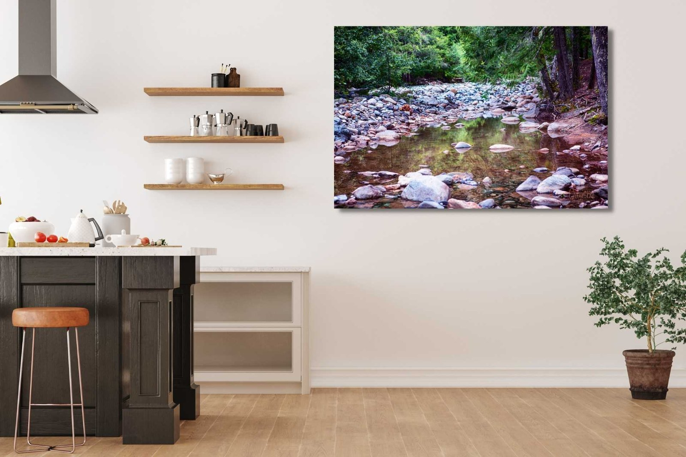
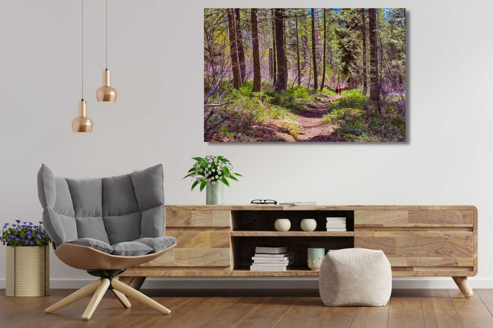
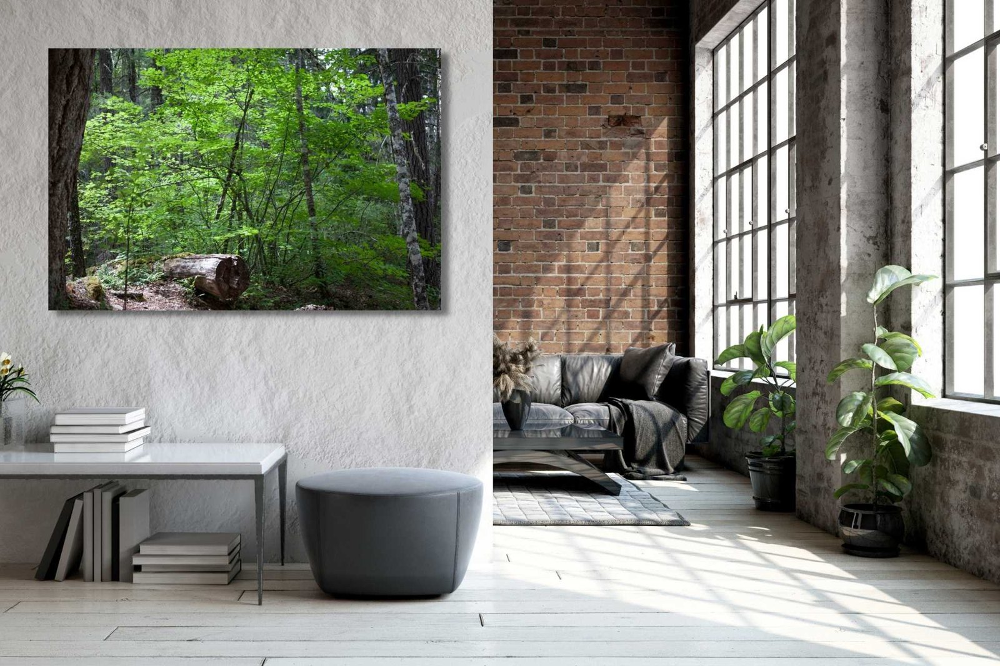
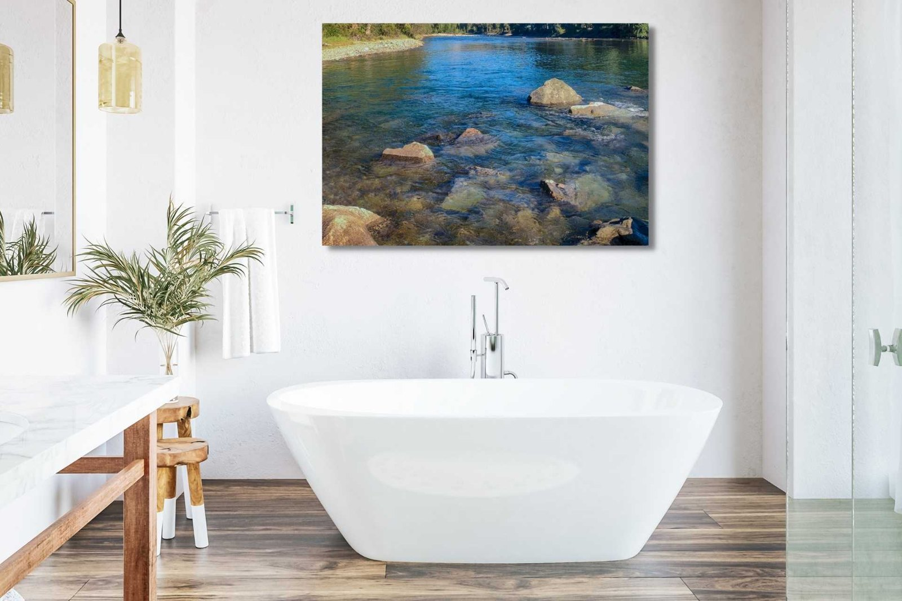
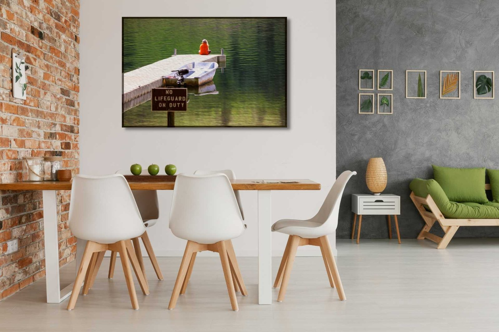
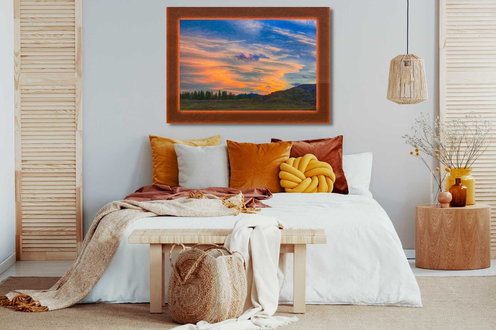

The Library · Omaste Witkowski
Hiking Trails In The Methow Valley

When we lived in Washington State, one of our favorite things to do was go hiking in the Methow Valley and especially the Twisp River trails! There are many wonderful locations here in Twisp, Winthrop, Carlton and Mazama. Each of them offers it’s own special trails and experiences.
Some of these hikes are easily accessible and some take a bit more effort to get to especially with kids!
Hiking The Twisp River Trails in The Methow Valley
Many of the trails on Twisp River are quite remote but this one was fairly easy to access from Twisp River Road. We set out early with our two kids and were able to enjoy some gorgeous spring weather. This artwork was created from an original photograph back in 2013 and was taken on our walk that day.

Twisp, Wa and The Twisp River
Twisp is a small town located in the Methow Valley in Washington State. It was originally a farming town, mining town and lumber town. Over the years, it evolved into what can now best be described as a tourist town and destination location. The area is gorgeous and offers amazing views, friendly people and a ton of outdoor activities.
Many people have heard of the Methow Valley, but not so many focus on Twisp itself, which is one part of this beautiful valley. Most people think of Mazama and/or Winthrop and this can be a big mistake. Why? Because the Twisp trails can often times be easier to get to and less crowded…
Unfortunately, with all of the fires in recent years, many of these trails are gone for good. In some cases, the only thing we have left is the photographs of years ago when the wilderness was green and lush with trees, shrubs and flowers. This was before the Pine beetles, drought in the west and too many lightning strikes.
How Methow Valley Landscape Artwork Can Enhance Any Interior Design
Landscape photos and paintings of long ago hikes and mountain trails in the Methow Valley are one of the best ways to bring the outdoors in and enjoy the beauty of forests, trees and mountains in interior designs and decor. Many people enjoy landscapes in the living room but you can also bring them into a bedroom, kitchen, dining room, bathroom or office quite easily. These types of art and photography work well with a modern farmhouse design, boho, industrial and/or contemporary setting.
Hiking Mazama Trails in The Methow Valley
Mazama trails are actually quite close to Canada and offer a wide range of spectacular views.
We enjoyed hiking them in the spring, summer and fall and skiing them in the winter. This particular view was captured on an Architectural photo shoot. I took a short break and a long walk with my camera. This scenic spot was a perfect place to imagine being while at work!
Contemporary Workplace and Office Artwork for Interior Designs

Landscape art in the office can be a lifesaver when it comes to being innovative, engaged and productive. Many people find the outdoors inspiring, relaxing and enjoyable BUT not too many of us get to actually enjoy the outdoors in our daily lives.
This is where artwork comes in! With art we can recreate the past in a sort of time machine and travel to place that would otherwise be unaccessible to us. We can actually go there WHILE we are at work! How cool is that?
These pieces of art at the office can remind us that there are other things in the world to be inspired by. This reminder can be the pick me up that we all need in the morning, afternoon or evening (if we are working late). The bright colors in this landscape painting pair well with the walls and plants in the office. All of it comes together in a soothing and yet inspiring vibe.
Living Room Industrial Interior Design

Landscape photography works quote well with an industrial interior design style because they are both raw and elemental. Trees, rocks, dirt and the outdoors have similar color tones to bricks, metal and wood. The browns, grey’s and greens are all cohesive and complement each other well.
The vibrant green colors will bring light and life to an industrial design that is somewhat drab and minimal. The outside comes inside and improves mood and sparks the imagination. You start to wonder where the light is going to go next and what secrets will it uncover…
Hiking Wolf Creek Trails in The Methow Valley
Wolf Creek where it drops into the Methow River was one of our favorite places to visit!
The river was low enough that we could hike along its edge and enjoy all sorts of scenic views. Including from the middle of the river!
Bathroom Modern Farmhouse Interior Design

Landscape photography also works well in a modern farmhouse bathroom interior design style. This photograph in particular was taken from the middle of a river and you can almost imagine the water all around you.
Imagine running a soothing bath and listening to the sound of the water running as your imagination expands to a mountain river many miles away. The blues and greens of the water pair well with the browns and earth tones of the rocks beneath it. Wood floors and furniture create a perfect complement to the nature tones in the artwork and you can almost feel the cold water.
Contemporary Kitchen Interior Design
Contemporary kitchens are a great place to put landscape and outdoor artwork in. The natural colors and tones work well with dark, wood or neutral colors and provide a soothing backdrop for creating food and having conversations.
These wonderful photos remind you of the elemental nature of life and the connection between what we are, who we are and where we come from. We need food to survive and we also need water in order to survive. Our soul can connect to these truths on an elemental level.
Hiking Sun Mountain Trails in The Methow Valley
Sun mountain from Patterson Lake Lodge was a really fun adventure. So fun in fact that many times we would stay at the cabins for birthdays, anniversaries and family events. The lake is pristine and wonderful to swim, boat and paddleboard in.
Contemporary Dining Room

Green and orange contrast brilliantly in this contemporary dining room. The art, colors and furniture choices support the energy and spirit of the work on the walls. Natural elements are present throughout the the scene and the landscape photography provides an excellent finishing touch to the overall design.
Water is again a central theme to the elemental aspect of dining and eating. The leaves on the other wall remind us of the connection between where we live, what we are surrounded with and who we are. All of the art and decor is in various earth tones with pops of bright green. Spring is here and we are nourished.
Boho Bedroom Interior Designs

Your boho bedroom is not complete without a spectacular sunset to go to sleep with. The warm, soothing tones in this brilliant sunset art capture the essence of shutting down for the day. The gentle hues captured here will help you to relax, unwind and think of beautiful things.
Looking for more Landscape Artwork?
Now that you are aware of how beautifully the outdoors can complement indoor interior designs, check out more landscape artwork here on our home decor website:
Find your own piece with the art adventure · Ask the gallery what fits your wall